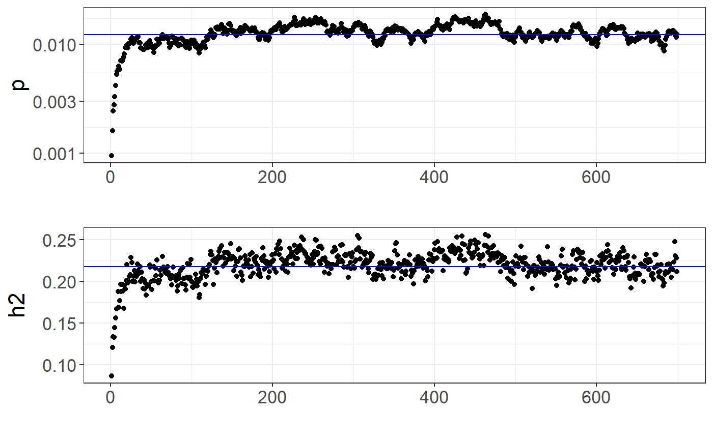

Computing polygenic scores using LDpred2
Florian Privé
February 24, 2022
Source:vignettes/LDpred2.Rmd
LDpred2.RmdHere we show how to compute polygenic risk scores using LDpred2.
New: if you install {bigsnpr} >= v1.10.4, LDpred2-grid and LDpred2-auto should be much faster for large data.
This tutorial uses fake data for educational purposes only. Another tutorial using another dataset can be found at https://privefl.github.io/bigsnpr-extdoc/polygenic-scores-pgs.html.
You should also probably look at the code of the paper, particularly at the code to prepare summary statistics (including performing the quality control presented in the Methods section “Quality control of summary statistics” of the paper), at the code to read BGEN files into the data format used by bigsnpr, and at the code to prepare LD matrices.
In practice, until we find a better set of variants, we recommend using the HapMap3 variants used in the PRS-CS and LDpred2 papers. If you do not have enough data to use as LD reference (e.g. at least 2000 individuals), we provide an LD reference to be used directly at https://doi.org/10.6084/m9.figshare.13034123, along with an example R script on how to use it. New: we now provide a new version of these LD references at https://doi.org/10.6084/m9.figshare.19213299 by forming independent LD blocks in the matrices, which can be useful for robustness and extra speed gains (see this new preprint).
Information about these variants can be retrieved with
# $pos is in build GRCh37 / hg19, but we provide positions in 3 other builds
info <- readRDS(runonce::download_file(
"https://ndownloader.figshare.com/files/25503788",
dir = "tmp-data", fname = "map_hm3_ldpred2.rds"))
str(info)## Classes 'tbl_df', 'tbl' and 'data.frame': 1054330 obs. of 10 variables:
## $ chr : int 1 1 1 1 1 1 1 1 1 1 ...
## $ pos : int 752721 754182 760912 768448 779322 838555 846808 853954 854250 864938 ...
## $ a0 : chr "A" "A" "C" "G" ...
## $ a1 : chr "G" "G" "T" "A" ...
## $ rsid : chr "rs3131972" "rs3131969" "rs1048488" "rs12562034" ...
## $ af_UKBB : num 0.841 0.87 0.84 0.106 0.128 ...
## $ ld : num 3.69 3.73 3.69 1.4 3.68 ...
## $ pos_hg17: int 792584 794045 800775 808311 819185 878418 886671 893817 894113 904801 ...
## $ pos_hg18: int 742584 744045 750775 758311 769185 828418 836671 843817 844113 854801 ...
## $ pos_hg38: int 817341 818802 825532 833068 843942 903175 911428 918574 918870 929558 ...Note that you should run LDpred2 genome-wide; just build the SFBM (the sparse LD matrix on disk) so that it contains all 1M HapMap3 variants genome-wide (see the for-loop below).
Downloading genotype data and summary statistics
You can download the tutorial data and unzip files in R. We store those files in a directory called "tmp-data" here.
First, you need to read genotype data from the PLINK files (or BGEN files) as well as the text file containing summary statistics.
## Loading required package: bigstatsr
# Read from bed/bim/fam, it generates .bk and .rds files.
snp_readBed("tmp-data/public-data3.bed")## [1] "C:\\Users\\au639593\\Desktop\\bigsnpr\\tmp-data\\public-data3.rds"
# Attach the "bigSNP" object in R session
obj.bigSNP <- snp_attach("tmp-data/public-data3.rds")
# See how the file looks like
str(obj.bigSNP, max.level = 2, strict.width = "cut")## List of 3
## $ genotypes:Reference class 'FBM.code256' [package "bigstatsr"] with 16 ..
## ..and 26 methods, of which 12 are possibly relevant:
## .. add_columns, as.FBM, bm, bm.desc, check_dimensions,
## .. check_write_permissions, copy#envRefClass, initialize,
## .. initialize#FBM, save, show#envRefClass, show#FBM
## $ fam :'data.frame': 503 obs. of 6 variables:
## ..$ family.ID : int [1:503] 0 0 0 0 0 0 0 0 0 0 ...
## ..$ sample.ID : chr [1:503] "HG00096" "HG00097" "HG00099" "HG00100" ...
## ..$ paternal.ID: int [1:503] 0 0 0 0 0 0 0 0 0 0 ...
## ..$ maternal.ID: int [1:503] 0 0 0 0 0 0 0 0 0 0 ...
## ..$ sex : int [1:503] 1 2 2 2 1 2 1 1 2 1 ...
## ..$ affection : num [1:503] -0.547 0.188 -0.407 -0.28 0.398 ...
## $ map :'data.frame': 45337 obs. of 6 variables:
## ..$ chromosome : int [1:45337] 1 1 1 1 1 1 1 1 1 1 ...
## ..$ marker.ID : chr [1:45337] "rs3934834" "rs12726255" "rs11260549" "..
## ..$ genetic.dist: num [1:45337] 0.359 0.408 0.932 0.986 1.107 ...
## ..$ physical.pos: int [1:45337] 1005806 1049950 1121794 1162435 1314015..
## ..$ allele1 : chr [1:45337] "T" "G" "A" "A" ...
## ..$ allele2 : chr [1:45337] "C" "A" "G" "C" ...
## - attr(*, "class")= chr "bigSNP"
# Get aliases for useful slots
G <- obj.bigSNP$genotypes
CHR <- obj.bigSNP$map$chromosome
POS <- obj.bigSNP$map$physical.pos
y <- obj.bigSNP$fam$affection
NCORES <- nb_cores()
# Read external summary statistics
sumstats <- bigreadr::fread2("tmp-data/public-data3-sumstats.txt")
str(sumstats)## 'data.frame': 50000 obs. of 9 variables:
## $ rsid : chr "rs3934834" "rs12726255" "rs11260549" "rs3766186" ...
## $ chr : int 1 1 1 1 1 1 1 1 1 1 ...
## $ pos : int 995669 1039813 1111657 1152298 1303878 1495118 1833906 2041373 2130121 2201709 ...
## $ a0 : chr "G" "T" "C" "C" ...
## $ a1 : chr "A" "C" "T" "A" ...
## $ beta : num 0.0125 0.027 0.0171 -0.0195 -0.0057 ...
## $ beta_se: num 0.0157 0.0167 0.0179 0.0199 0.0213 ...
## $ N : int 15155 15155 15155 15155 15155 15155 15155 15155 15155 15155 ...
## $ p : num 0.426 0.107 0.342 0.328 0.789 ...We split the genotype data using part of the data to choose hyper-parameters and another part of the data to evaluate statistical properties of polygenic risk score such as AUC. Here we consider that there are 350 individuals to be used as validation set to tune hyper-parameters for LDpred2-grid. The other 153 individuals are used as test set to evaluate the final models.
set.seed(1)
ind.val <- sample(nrow(G), 350)
ind.test <- setdiff(rows_along(G), ind.val)Matching variants between genotype data and summary statistics
To match variants contained in genotype data and summary statistics, the variables "chr" (chromosome number), "pos" (genetic position), "a0" (reference allele) and "a1" (derived allele) should be available in the summary statistics and in the genotype data. These 4 variables are used to match variants between the two data frames. From the summary statistics, you need to get "beta", "beta_se" (standard errors), and "n_eff" (effective sample size per variant for GWAS with logistic regression, and just total sample size for continuous traits).
# sumstats$n_eff <- 4 / (1 / sumstats$n_case + 1 / sumstats$n_control)
# sumstats$n_case <- sumstats$n_control <- NULL
sumstats$n_eff <- sumstats$N
map <- setNames(obj.bigSNP$map[-3], c("chr", "rsid", "pos", "a1", "a0"))
df_beta <- snp_match(sumstats, map)## 50,000 variants to be matched.## 0 ambiguous SNPs have been removed.## 4 variants have been matched; 2 were flipped and 2 were reversed.## Error: Not enough variants have been matched.Here, there is problem with the matching; this is due to having different genome builds. You can either convert between builds with snp_modifyBuild() (or directly use the converted positions in info), or match by rsIDs instead.
df_beta <- snp_match(sumstats, map, join_by_pos = FALSE) # use rsid instead of pos## 50,000 variants to be matched.## 0 ambiguous SNPs have been removed.## 45,337 variants have been matched; 22,758 were flipped and 15,092 were reversed.If no or few variants are actually flipped, you might want to disable the strand flipping option (strand_flip = FALSE).
Computing LDpred2 scores genome-wide
Some quality control on summary statistics is highly recommended (see paper and other tutorial). A new refined QC is described in this new preprint. See e.g. the code that was used to prepare the sumstats there.
Correlation
First, you need to compute correlations between variants. We recommend to use a window size of 3 cM (see the LDpred2 paper).
# POS2 <- snp_asGeneticPos(CHR, POS, dir = "tmp-data", ncores = NCORES)
# To avoid downloading "large" files, this has been precomputed
POS2 <- obj.bigSNP$map$genetic.distWe create the on-disk sparse genome-wide correlation matrix on-the-fly:
tmp <- tempfile(tmpdir = "tmp-data")
for (chr in 1:22) {
# print(chr)
## indices in 'df_beta'
ind.chr <- which(df_beta$chr == chr)
## indices in 'G'
ind.chr2 <- df_beta$`_NUM_ID_`[ind.chr]
corr0 <- snp_cor(G, ind.col = ind.chr2, size = 3 / 1000,
infos.pos = POS2[ind.chr2], ncores = NCORES)
if (chr == 1) {
ld <- Matrix::colSums(corr0^2)
corr <- as_SFBM(corr0, tmp, compact = TRUE)
} else {
ld <- c(ld, Matrix::colSums(corr0^2))
corr$add_columns(corr0, nrow(corr))
}
}Note that the “compact” format for SFBMs is quite new. You will need packageVersion("bigsparser") >= package_version("0.5"). Make sure to reinstall {bigsnpr} when updating {bigsparser} to this new version (to avoid crashes).
file.size(corr$sbk) / 1024^3 # file size in GB## [1] 0.03205058Note that you will need at least the same memory as this file size (to keep it cached for faster processing) + some other memory for all the results returned. If you do not have enough memory, processing will be very slow (because you would read the data from disk all the time). If using the one million HapMap3 variants, requesting 60 GB should be enough.
LDpred2-inf: infinitesimal model
(ldsc <- with(df_beta, snp_ldsc(ld, length(ld), chi2 = (beta / beta_se)^2,
sample_size = n_eff, blocks = NULL)))## int h2
## 0.9496371 0.2981213
h2_est <- ldsc[["h2"]]
beta_inf <- snp_ldpred2_inf(corr, df_beta, h2 = h2_est)
pred_inf <- big_prodVec(G, beta_inf, ind.row = ind.test, ind.col = df_beta[["_NUM_ID_"]])
cor(pred_inf, y[ind.test])## [1] 0.3171149LDpred2-inf would very likely perform worse than the other models presented hereinafter.
LDpred2(-grid): grid of models
In practice, we recommend to test multiple values for h2 and p.
## [1] 0.0894 0.2087 0.2981 0.4174## [1] 1.0e-05 1.8e-05 3.2e-05 5.6e-05 1.0e-04 1.8e-04 3.2e-04 5.6e-04
## [9] 1.0e-03 1.8e-03 3.2e-03 5.6e-03 1.0e-02 1.8e-02 3.2e-02 5.6e-02
## [17] 1.0e-01 1.8e-01 3.2e-01 5.6e-01 1.0e+00
(params <- expand.grid(p = p_seq, h2 = h2_seq, sparse = c(FALSE, TRUE)))## p h2 sparse
## 1 1.0e-05 0.0894 FALSE
## 2 1.8e-05 0.0894 FALSE
## 3 3.2e-05 0.0894 FALSE
## 4 5.6e-05 0.0894 FALSE
## 5 1.0e-04 0.0894 FALSE
## 6 1.8e-04 0.0894 FALSE
## 7 3.2e-04 0.0894 FALSE
## 8 5.6e-04 0.0894 FALSE
## 9 1.0e-03 0.0894 FALSE
## 10 1.8e-03 0.0894 FALSE
## [ reached 'max' / getOption("max.print") -- omitted 158 rows ]
# takes less than 2 min with 4 cores
beta_grid <- snp_ldpred2_grid(corr, df_beta, params, ncores = NCORES)
pred_grid <- big_prodMat(G, beta_grid, ind.col = df_beta[["_NUM_ID_"]])
params$score <- apply(pred_grid[ind.val, ], 2, function(x) {
if (all(is.na(x))) return(NA)
summary(lm(y[ind.val] ~ x))$coef["x", 3]
# summary(glm(y[ind.val] ~ x, family = "binomial"))$coef["x", 3]
})Note that missing values represent models that diverged substantially.
library(ggplot2)
ggplot(params, aes(x = p, y = score, color = as.factor(h2))) +
theme_bigstatsr() +
geom_point() +
geom_line() +
scale_x_log10(breaks = 10^(-5:0), minor_breaks = params$p) +
facet_wrap(~ sparse, labeller = label_both) +
labs(y = "GLM Z-Score", color = "h2") +
theme(legend.position = "top", panel.spacing = unit(1, "lines"))
library(dplyr)
params %>%
mutate(sparsity = colMeans(beta_grid == 0), id = row_number()) %>%
arrange(desc(score)) %>%
mutate_at(c("score", "sparsity"), round, digits = 3) %>%
slice(1:10)## p h2 sparse score sparsity id
## 1 0.010 0.2981 FALSE 10.267 0.000 55
## 2 0.018 0.2981 TRUE 10.245 0.746 140
## 3 0.018 0.4174 TRUE 10.234 0.774 161
## 4 0.010 0.2087 TRUE 10.218 0.784 118
## 5 0.010 0.4174 FALSE 10.206 0.000 76
## [ reached 'max' / getOption("max.print") -- omitted 5 rows ]You can then choose the best model according to your preferred criterion (e.g. max AUC). Here, we use the Z-Score from the (linear or logistic) regression of the phenotype by the PRS since we have found it more robust than using the correlation or the AUC. It also enables adjusting for covariates in this step.
Also note that we separate both sparse and non-sparse models to show that their predictive performance are similar (in the paper). In practice, if you do not really care about sparsity, you could choose the best LDpred2-grid model among all sparse and non-sparse models.
best_beta_grid <- params %>%
mutate(id = row_number()) %>%
# filter(sparse) %>%
arrange(desc(score)) %>%
slice(1) %>%
pull(id) %>%
beta_grid[, .]
pred <- big_prodVec(G, best_beta_grid, ind.row = ind.test,
ind.col = df_beta[["_NUM_ID_"]])
cor(pred, y[ind.test])## [1] 0.4948351LDpred2-auto: automatic model
We recommend to run many chains in parallel with different initial values for p. In this new preprint, we have introduced two new parameters in LDpred2-auto for improving its robustness, allow_jump_sign and shrink_corr, and recommend to use them.
# takes less than 2 min with 4 cores
multi_auto <- snp_ldpred2_auto(corr, df_beta, h2_init = h2_est,
vec_p_init = seq_log(1e-4, 0.2, length.out = 30),
allow_jump_sign = FALSE, shrink_corr = 0.95,
ncores = NCORES)
str(multi_auto, max.level = 1)## List of 30
## $ :List of 10
## $ :List of 10
## $ :List of 10
## $ :List of 10
## $ :List of 10
## $ :List of 10
## $ :List of 10
## $ :List of 10
## $ :List of 10
## $ :List of 10
## $ :List of 10
## $ :List of 10
## $ :List of 10
## $ :List of 10
## $ :List of 10
## $ :List of 10
## $ :List of 10
## $ :List of 10
## $ :List of 10
## $ :List of 10
## $ :List of 10
## $ :List of 10
## $ :List of 10
## $ :List of 10
## $ :List of 10
## $ :List of 10
## $ :List of 10
## $ :List of 10
## $ :List of 10
## $ :List of 10
## - attr(*, "rng")=List of 30
## - attr(*, "doRNG_version")= chr "1.7.4"
str(multi_auto[[1]], max.level = 1)## List of 10
## $ beta_est : num [1:45337] 5.90e-05 2.92e-04 9.07e-05 -1.06e-04 2.15e-05 ...
## $ postp_est : num [1:45337] 0.0055 0.01264 0.00618 0.00633 0.00433 ...
## $ corr_est : num [1:45337] 1.13e-04 1.24e-04 -2.65e-05 9.64e-06 -3.11e-05 ...
## $ sample_beta: num[1:45337, 0 ]
## $ p_est : num 0.0112
## $ h2_est : num 0.211
## $ path_p_est : num [1:700] 0.000781 0.001351 0.002809 0.003616 0.004239 ...
## $ path_h2_est: num [1:700] 0.0852 0.1034 0.1476 0.1572 0.168 ...
## $ h2_init : num 0.298
## $ p_init : num 1e-04You can verify whether the chains “converged” by looking at the path of the chains:
library(ggplot2)
auto <- multi_auto[[1]] # first chain
plot_grid(
qplot(y = auto$path_p_est) +
theme_bigstatsr() +
geom_hline(yintercept = auto$p_est, col = "blue") +
scale_y_log10() +
labs(y = "p"),
qplot(y = auto$path_h2_est) +
theme_bigstatsr() +
geom_hline(yintercept = auto$h2_est, col = "blue") +
labs(y = "h2"),
ncol = 1, align = "hv"
)
In the LDpred2 paper, we proposed an automatic way of filtering bad chains by comparing the scale of the resulting predictions (see this code). We have tested a somewhat equivalent and simpler alternative since, which we recommend here:
range <- sapply(multi_auto, function(auto) diff(range(auto$corr_est)))
keep <- (range > (0.9 * quantile(range, 0.9)))To get the final effects / predictions (after filtering):
beta_auto <- rowMeans(sapply(multi_auto[keep], function(auto) auto$beta_est))
pred_auto <- big_prodVec(G, beta_auto, ind.row = ind.test, ind.col = df_beta[["_NUM_ID_"]])
cor(pred_auto, y[ind.test])## [1] 0.4956935lassosum2: grid of models
lassosum2 is a re-implementation of the lassosum model that now uses the exact same input parameters as LDpred2 (corr and df_beta). It should be fast to run. It can be run next to LDpred2 and the best model can be chosen using the validation set. Note that parameter ‘s’ from lassosum has been replaced by a new parameter ‘delta’ in lassosum2, in order to better reflect that the lassosum model also uses L2-regularization (therefore, elastic-net regularization).
beta_lassosum2 <- snp_lassosum2(corr, df_beta, ncores = NCORES)
params2 <- attr(beta_lassosum2, "grid_param")
pred_grid2 <- big_prodMat(G, beta_lassosum2, ind.col = df_beta[["_NUM_ID_"]])
params2$score <- apply(pred_grid2[ind.val, ], 2, function(x) {
if (all(is.na(x))) return(NA)
summary(lm(y[ind.val] ~ x))$coef["x", 3]
# summary(glm(y[ind.val] ~ x, family = "binomial"))$coef["x", 3]
})
library(ggplot2)
ggplot(params2, aes(x = lambda, y = score, color = as.factor(delta))) +
theme_bigstatsr() +
geom_point() +
geom_line() +
scale_x_log10(breaks = 10^(-5:0)) +
labs(y = "GLM Z-Score", color = "delta") +
theme(legend.position = "top") +
guides(colour = guide_legend(nrow = 1))## Warning: Removed 7 rows containing missing values (geom_point).## Warning: Removed 7 row(s) containing missing values (geom_path).
library(dplyr)
best_grid_lassosum2 <- params2 %>%
mutate(id = row_number()) %>%
arrange(desc(score)) %>%
slice(1) %>%
pull(id) %>%
beta_lassosum2[, .]
best_grid_overall <-
`if`(max(params2$score, na.rm = TRUE) > max(params$score, na.rm = TRUE),
best_grid_lassosum2, best_beta_grid)
# Some cleaning
rm(corr); gc(); file.remove(paste0(tmp, ".sbk"))## used (Mb) gc trigger (Mb) max used (Mb)
## Ncells 3396020 181.4 5901124 315.2 5901124 315.2
## Vcells 33736521 257.4 54161452 413.3 54122057 413.0## [1] TRUEReferences
Privé, F., Arbel, J., & Vilhjálmsson, B. J. (2020). LDpred2: better, faster, stronger. Bioinformatics, 36(22-23), 5424-5431.
Privé, F., Arbel, J., Aschard, H., & Vilhjálmsson, B. J. (2022). Identifying and correcting for misspecifications in GWAS summary statistics and polygenic scores. bioRxiv